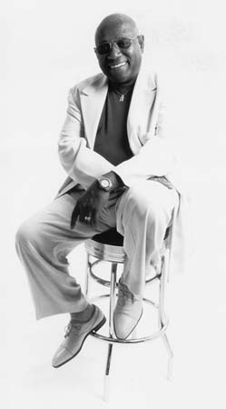

Mighty Sam McClain

Номинант на Грэмми и Indie Awards.
Номинант журнала Real Blues в категории «Исполнитель RB и Soul» в 1997, 1998,
1999 гг.
Номинант W.C. Handy Awards в 1994, 1995, 1996, 1997, 1998, 1999 гг.
Победитель Germany's Talkin' Blues в 1998 году.
Победитель в номинации «Лучший иностранный исполнитель» Trophee's France Blues
1998.
Номинант Kaluah Boston Music Awards 1997
Academy for Advancement of High End Audio 1996 - победитель
NAIRD Award 1996- победитель
Boston Music Awards 1993 - первое место в номинации «Лучший блюзовое исполнение
и блюзовый альбом».
Music City Song Festival 1987 - первое место в номинации «Лучший вокалист».
Майти Сэм МакКлейн появился на свет в 1943 году, в штате Луизиана, на северном краю Bible Belt в Монро. Не успело Сэму исполниться 5 лет, как он начал петь евангельские псалмы в церкви, которую посещала его мать. Именно тогда он осознал, что в пении заключается его миссия. В 13 лет он ушел из дома из-за жестокого обращения отчима, и примкнул к местному ритм-энд-блюзовому гитаристу Little Melvin Underwood из Chitlin Circuit. Поначалу на побегушках в группе, затем на лидирующем положении вокалиста.
Во время выступления в Клубе 506 в Пенсаколе, штат Флорида, Майти Сэм был представлен авторитетному продюсеру и ди-джею "Papa Don" Schroeder. В 1966 году Сэм записал «Sweet Dreams" Patsy Cline, первый по-настоящему успешный сингл. Далее последовали несколько сейшенов в звукозаписывающей студии и синглы "Fannie-May" и "In the Same Old Way", однако успех никогда не доставался Сэму легко.
В течение пятнадцати лет, сначала в Нэшвилле, затем в Новом Орлеане, Сэм занимался по-настоящему черной работой, и даже вынужден сдавать кровь, пока был бездомным. Сэм прошел долгий путь от скамейки в парке и хлопковых плантаций к Apollo Theater, от нищеты и голода к успеху и признанию.
Все то время, что Сэм жил без гроша за душой, с ним были его песни и музыка, подарившие ему другую жизнь в середине 80-х. Нью-Орлеанская гордость, Neville Brothers, набирали новых музыкантов в свои ряды, и в 1989 году Сэму выпал уникальный шанс отправиться вместе с ними в Японию, где предстояло гастролировать и принимать участие в записи. "Live In Japan", с участием легендарного Wayne Bennett - это по-настоящему драгоценное творение, оцененное поклонниками по всему миру.
В ранних 90-х Сэм связал свою жизнь с Новой Англией и проектом "Hubert Sumlin Blues Party", продюсируемым Hammond Scott, в котором принимали участие многие бостонские музыканты. Благодаря этому успешному проекту, Сэм обзавелся большим количеством полезных контактов и друзей, в результате чего начал сотрудничество с Joe Harley и AudioQuest Music. В результате появились принесшие славу синглы "Give It Up To Love" и "Keep On Movin".
После переезда в Новый Хэмпшир, Сэм создал "Sledgehammer Soul and Down Home Blues». В 1998 году последовали два релиза: "Journey" (AQM) и "Joy and Pain-Live in Europe", выпущенные на лейбле CrossCut. "Soul Survivor-The Best of MSM" стало его прощанием с AudioQuest. Затем Сэм заключил контракт с лейблом Telarc Blues и начал долговременное сотрудничество с продюсером Джо Харли.
С 1996 года Сэм несколько отодвинул на задний план музыкальную карьеру и занялся менеджментом. Он основал McClain Management, призванную помогать индивидуальности и целостности талантливых музыкантов. МакКлейн основал McClain Productions после успешного со-продюсирования CD с Джо Харли. Отныне Майти Сэм МакКлейн сам стал контролировать свою жизнь и карьеру.
«Душой Америки» провозгласила Майти Сэма МакКлейна Европа, а вот строки его песни: «Я певец, я человек с песней: и мне есть, что вам сказать:» Новый альбом Сэма "One More Bridge to Cross" был выпущен на собственном лейбле Mighty Music в феврале 2003 года.